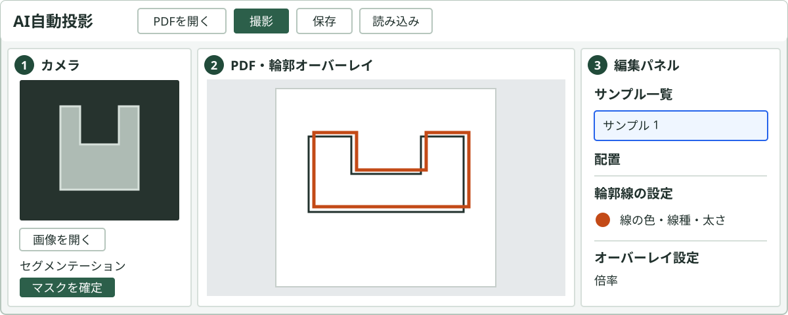

部品の画像からAIで輪郭を抽出し、PDF図面に重ねます。
輪郭の位置や角度を調整し、作業内容を保存できます。

① カメラ
画像を確認し、輪郭を抽出します。
② PDF・輪郭表示
図面上の輪郭の位置や角度を調整します。
③ 編集パネル
サンプル選択と線の設定をします。
PDFを開く 「PDFを開く」を押し、図面を選びます。
撮影する 部品を映して「撮影」を押します。画像は「画像を開く」で選び、「撮影」を押します。
輪郭を抽出する 撮影画像で、含めたい場所を左クリック、除きたい場所を右クリックします。処理後、候補を確認して「マスクを確定」を押します。
図面に合わせる 輪郭線を左ドラッグで移動、右ドラッグで回転します。線は編集パネルで設定します。
保存する 「保存」を押し、結果を確認します。再開時は「読み込み」で保存済みプロジェクトを選び、もう一度「読み込み」を押します。
| 左クリック | 輪郭に含める場所を指定 |
| 右クリック | 輪郭から除く場所を指定 |
| 輪郭を左ドラッグ | 輪郭を移動 |
| 輪郭を右ドラッグ | 輪郭を回転 |
| ホイール | 表示を拡大・縮小 |
| 中ボタンドラッグ | 表示位置を移動 |
確認：未確定の撮影画像や輪郭は保存されません。輪郭を確定してから保存してください。出力PDFが必要な場合は、保存後に表示される「PDFをダウンロード」を押します。倍率は実寸の自動校正ではありません。